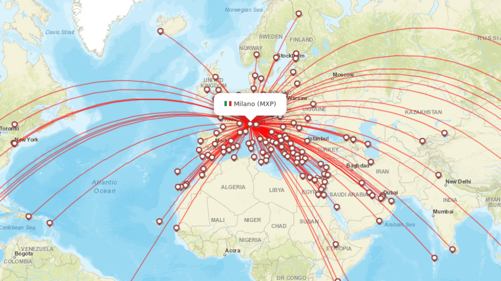
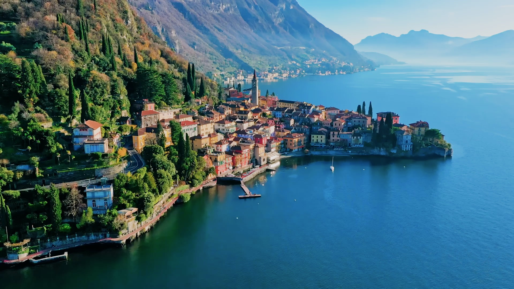
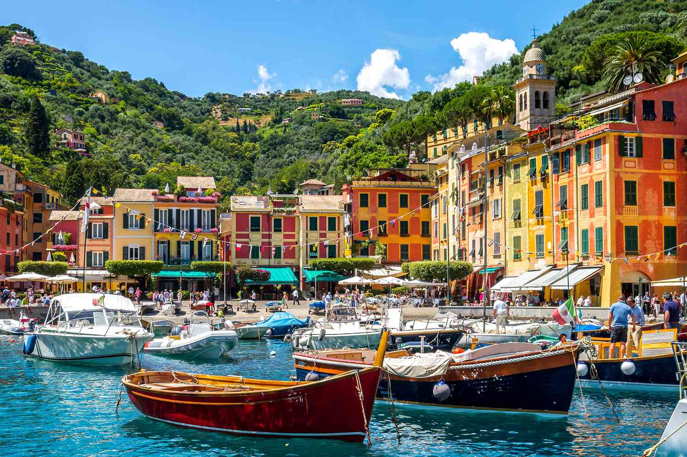

My Dream Italian Getaway:
After my graduation in May, I have a celebratory trip planned with my two sisters to the motherland, Italy! However, the only things we have booked are our roundtrip flights from JFK to Milan. Since we are planning on doing a multi-city trip, incorporating Milan, Lake Camo, Portofino, and the Amalfi Coast, our heads are all spinning on how we are going to find the time to plan. With me still being in school and my sisters working, it’s hard to carve out the time to do so.
So, I put my thinking cap on (kinda) and decided to ask AI for help. Similar to the example we were shown in class, where we used AI to replace a Starbucks barista, I want to use an AI tool and ask it to simulate a travel agent. The goal is to maximize our amount of time in each city while also finding lodging and recommendations that accommodate our interests in nightlife and proximity to the beach when applicable.
The Initial Plan
My tentative itinerary looked something like this:
- Arrive in Milan on 6/10, spend a day and night exploring the city
- Travel to Lake Como on 6/11 for a 3-night stay
- Head to Portofino on 6/14 for a 2-night stay, dropping off the rental car at Genoa airport and taking a taxi to Portofino
- Fly from Genoa to Naples and get to the Amalfi Coast on 6/16 or 6/17 for a 5-6 night stay
- Return to Milan for the flight back to JFK

Refining the Details
When I provided Claude-3 with this tentative itinerary and our goals for this trip, it responded with:
Certainly! As your travel agent, I’ve taken your tentative itinerary and made some adjustments to optimize your time in each location while considering your interests in nightlife and proximity to the beach. Here’s the updated itinerary:
Day 1 (6/10): Arrive in Milan - Land at Milan Malpensa Airport at 7am - Transfer to your hotel in downtown Milan (I recommend the Armani Hotel Milano for its central location and luxurious amenities) - Spend the day exploring Milan, visiting attractions like the Duomo di Milano…
Day 2-4 (6/11-6/13): Lake Como - Rent a car and drive to Lake Como (approximately 1.5 hours) - Check into your hotel (I suggest the Grand Hotel Tremezzo for its stunning lake views and excellent amenities) - Spend the next three days exploring the charming towns around Lake Como, such as Bellagio…
Day 5-6 (6/14-6/15): Portofino - Check into your hotel (I recommend the Belmond Hotel Splendido for its prime location and luxurious accommodations) - Spend the next two days relaxing on the beach, exploring the picturesque town…
Day 7 (6/16): Travel to Amalfi Coast - Take a taxi to Genoa Airport and fly to Naples (1.5-hour direct flight) - Upon arrival in Naples, take a private transfer to your hotel on the Amalfi Coast (I suggest the Le Sirenuse in Positano for its stunning coastal views and proximity to the beach)
Day 8-12 (6/17-6/21): Amalfi Coast - Spend the next five days exploring the beautiful Amalfi Coast - Visit charming towns like Positano, Amalfi, and Ravello
Day 13 (6/22): Return to Milan - Take a private transfer to Naples Airport and fly back to Milan

For me, this was okay, but I wanted some additional arrangements. I wanted Claude to make specific recommendations for daily activities in each place as well as restaurant and bar recommendations. Also, please keep in mind we would have to return to Milan the night of the 21st as our flight is out of Milan on 6/22 at noon.
The detailed Itinerary was so much better, but not perfetto!
Day 1 (6/10): Milan - Visit the Duomo di Milano and climb to the rooftop for panoramic views - Explore the Galleria Vittorio Emanuele II and shop at the luxury boutiques - Walk through the Brera District and visit the Pinacoteca di Brera art gallery - Dinner at Ratanà for modern Milanese cuisine - Drinks at Ceresio 7 rooftop bar for stunning city views
Day 2-4 (6/11-6/13): Lake Como - Take the funicular to Brunate for breathtaking views of the lake and surrounding mountains - Visit Villa Carlotta in Tremezzo to admire the beautiful gardens and art collection - Explore the charming town of Bellagio and have lunch at La Punta with lake views - Take a boat tour of the lake and stop at Villa del Balbianello - Dinner at Mistral at the Grand Hotel Tremezzo for Michelin-starred cuisine - Drinks at Harry’s Bar in Cernobbio for a classic Italian aperitivo
As you can see, AI was capable of giving local recommendations, even with specific locations for after-dinner drinks. I was so much happier but I still wanted it to be on a daily interval, not a location based interval.

The Final Touches
I was blown away when Claude the travel agent provided me with the final, daily itinerary. However, I do think I was so impressed because I did prompt the AI with the critique of “One big itinerary for the whole trip with every moment accounted for.”
They had thought of everything, from restaurant and bar recommendations to unique activities and experiences in each location, with time stamps. I couldn’t wait to climb to the rooftop of the Duomo di Milano for panoramic views, take a sunset cruise along the Amalfi Coast, and immerse myself in the charming towns and stunning landscapes of Lake Como and Portofino.
The Perfect Itinerary
The final itinerary was a dream come true:
Day 1 (6/10): Milan - 7:00 AM: Arrive at Milan Malpensa Airport - 8:30 AM: Transfer to Armani Hotel Milano in downtown Milan and check-in - 10:00 AM: Visit the Duomo di Milano and climb to the rooftop for panoramic views - 12:30 PM: Lunch at Obicà Duomo for authentic Italian pizza and mozzarella … - 7:30 PM: Dinner at Ratanà for modern Milanese cuisine - 9:30 PM: Drinks at Ceresio 7 rooftop bar for stunning city views
Day 2 (6/11): Lake Como - 9:00 AM: Rent a car and drive to Lake Como (approximately 1.5 hours) - 11:00 AM: Check into the Grand Hotel Tremezzo - 12:30 PM: Lunch at the hotel’s La Terrazza restaurant with lake views - 2:00 PM: Take the funicular to Brunate for breathtaking views of the lake and surrounding mountains … - 9:30 PM: Drinks at Harry’s Bar in Cernobbio for a classic Italian aperitivo
Day 3 (6/12): Lake Como - 10:30 AM: Explore the charming town of Bellagio - 12:30 PM: Lunch at La Punta in Bellagio with lake views - 2:00 PM: Take a boat tour of the lake and stop at Villa del Balbianello … - 7:30 PM: Dinner at Locanda dell’Isola Comacina for traditional Italian fare on a private island
Day 4 (6/13): Lake Como - 10:30 AM: Visit the picturesque town of Varenna and explore Villa Monastero - 12:30 PM: Lunch at Ristorante Il Cavatappi in Varenna for local specialties - 2:30 PM: Take a cooking class to learn how to make local dishes like risotto and pasta … - 8:00 PM: Dinner at Ristorante Bilacus in Bellagio for a romantic dinner with lake views
Day 5 (6/14): Portofino - 8:30 AM: Drive to Genoa Airport (approximately 2.5 hours) and drop off the rental car - 11:30 AM: Take a taxi to Portofino (about 45 minutes) - 12:30 PM: Check into the Belmond Hotel Splendido … - 5:30 PM: Explore the charming town of Portofino and visit the Castello Brown for stunning views of the harbor - 8:00 PM: Dinner at Da Puny for fresh seafood and pasta
Day 6 (6/15): Portofino - 10:00 AM: Take a boat trip to the nearby town of Santa Margherita Ligure and explore its charming streets - 12:30 PM: Lunch at Ristorante Antonio in Santa Margherita Ligure for seafood specialties … - 8:00 PM: Dinner at Ristorante Cracco in Portofino for innovative Italian cuisine
Day 7 (6/16): Amalfi Coast - 8:30 AM: Take a taxi to Genoa Airport - 10:00 AM: Fly to Naples (1.5-hour direct flight) - 11:30 AM: Take a private transfer to Le Sirenuse hotel in Positano … - 3:00 PM: Explore the charming town of Positano and visit the Church of Santa Maria Assunta - 7:00 PM: Dinner at Chez Black in Positano for fresh seafood and people-watching - 9:00 PM: Drinks at Franco’s Bar in Positano for sunset views and crafted cocktails
Day 8 (6/17): Amalfi Coast …
Day 9 (6/18): Amalfi Coast …
Day 10 (6/19): Amalfi Coast - 9:30 AM: Explore the gardens and villas of Ravello, such as Villa Rufolo and Villa Cimbrone - 12:30 PM: Lunch at Ristorante Pizzeria Vittoria in Ravello for stunning coastal views - 2:30 PM: Visit the Emerald Grotto in Conca dei Marini - 5:30 PM: Return to Positano and enjoy a wine tasting at Le Sirenuse hotel - 8:00 PM: Dinner at La Cambusa in Positano for creative Italian dishes
Day 11 (6/20): Amalfi Coast …
Day 12 (6/21): Return to Milan - 9:00 AM: Take a private transfer to Naples Airport - 10:30 AM: Fly back to Milan (1.5-hour direct

A Dream Come True
Planning this Italian getaway with my AI travel agent was an incredible experience. Their attention to detail, understanding of my preferences, and dedication to creating the perfect itinerary made me feel confident that I was in good hands.
I concluded the conversation with saying: Bellissimo! Grazie mille!
And they even responded in Italian, what a treat!
Prego! È stato un piacere aiutarti a pianificare il tuo viaggio in Italia. Sono sicuro che sarà un’esperienza indimenticabile, piena di bellissimi paesaggi, deliziosi cibi e vini, e ricordi preziosi.
Non esitare a contattarmi se hai bisogno di ulteriori consigli o assistenza durante il tuo viaggio. Ti auguro un meraviglioso soggiorno in Italia e spero che tu possa goderti appieno ogni momento del tuo itinerario.
Buon viaggio e divertiti!